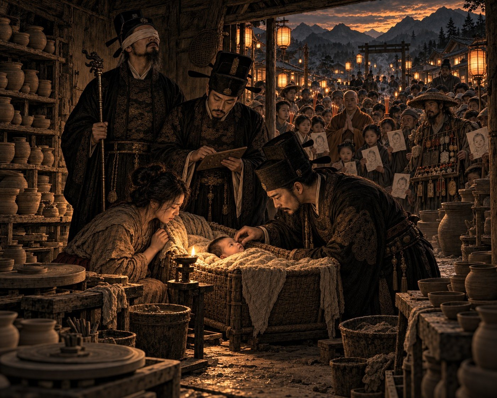

Дело о неверном рождении

В Империи существовало множество способов вызвать страх. Можно было объявить о появлении разбойников на дорогах. Можно было сообщить о неурожае или о приближении северной армии. Можно было даже пустить слух о демонах в старом храме. Но существовала вещь, способная напугать людей сильнее всего перечисленного. Чудо. Особенно если чудо происходило там, где ему не следовало происходить.
Известие пришло из маленького уезда в предгорьях Циньлина. В донесении говорилось, что у местного гончара родился ребенок, обладающий сразу тремя Дарами. Уже через неделю слух разросся настолько, что в деревню начали стекаться паломники, монахи, торговцы амулетами и просто любопытные бездельники. Управление Безупречной Гармонии не любило чудеса. Чудеса имели неприятное свойство превращаться в восстания. Поэтому нас отправили разобраться.
Дорога заняла почти две недели. К тому времени, когда мы добрались до деревни, вокруг дома гончара уже образовался небольшой рынок. Кто-то продавал благовония. Кто-то рисовал изображения младенца на бумаге. Кто-то собирал пожертвования на строительство будущего святилища. Ребенку еще не исполнился месяц, а он уже приносил семье больше денег, чем его отец заработал за всю предыдущую жизнь.
Со мной, как обычно, находились Цзянь и Ло. За годы службы наша троица превратилась в странный, но надежный механизм. Ло говорил, как все глухие, я слышал его голос, но не видел его жестов. Цзянь видел и слышал нас обоих, однако не мог говорить. Поэтому именно он связывал нас воедино. Для быстрых сообщений существовали условные касания. Для сложных мыслей — деревянные пластинки с рельефными знаками, которые я мог читать пальцами. Эти пластинки я терпеть не мог. Пока разберешь длинное объяснение, подозреваемый успеет признаться, отказаться от признания и умереть от старости.
Самого младенца мы осмотрели вечером. Точнее, осматривали его Ло и Цзянь, а я слушал дыхание ребенка, шорох одежды родителей и непрерывный поток слухов вокруг дома. Мать уверяла, что мальчик следит глазами за людьми. Отец утверждал, что ребенок реагирует на голос. Повитуха рассказывала, будто младенец пытался говорить. Каждый свидетель добавлял новую подробность, и с каждым пересказом чудо становилось все больше.
На следующий день начался цзянь — наблюдение. Мы провели возле ребенка почти весь день. Он ел, спал, плакал и снова засыпал. Как и положено всякому младенцу. Ло следил за его глазами и реакциями. Цзянь записывал наблюдения. К вечеру стало ясно, что никакого чуда нет. Когда Ло хлопал в ладоши за спиной ребенка, тот не реагировал. Когда рядом гремели горшки, младенец продолжал спокойно спать. Зато он прекрасно следил глазами за движением людей и охотно лепетал. Ребенок оказался самым обычным носителем Дара Намерения. Глухим.
Для жителей Империи это было не недостатком. С самого детства людей учили, что Небо не отнимает чувство, а заменяет его Даром. Слепым дарована Истина. Глухим — Намерение. Немым — Память. Человек не теряет часть себя. Он получает возможность глубже понять другую сторону мира. Так учили в храмах, так говорили наставники, так писали официальные трактаты. Поэтому слух о ребенке с тремя Дарами взволновал людей не потому, что он якобы обладал тремя чувствами. Людей потрясла сама мысль, что кто-то может получить все благословения Неба одновременно.
На следующее утро я уже собирался закрывать дело. Именно тогда в нашу жизнь вмешалась старая повитуха. Ей было столько лет, что никто в деревне не мог назвать ее настоящий возраст. Когда мы пришли к ней домой, я услышал старческий кашель, скрип деревянного пола и удивительно ровное дыхание человека, который давно примирился со смертью.
— Значит, чуда нет? — спросила она.
— Нет.
— Тогда вы зря приехали.
Я уже собирался попрощаться, но старуха неожиданно добавила:
— Хотя вопрос вы задаете неправильный.
Я остановился.
— Какой вопрос правильный?
— Не может ли человек обладать тремя Дарами. А откуда взялись сами Дары.
В комнате стало тихо. Даже Ло перестал двигаться.
— Это вопрос для философов, — ответил я.
— Нет, господин следователь. Это вопрос для историков.
Она немного помолчала, словно вспоминая давно забытый разговор.
— Когда я была маленькой, старики рассказывали другие истории. Одни говорили, что Небо разделило людей ради гармонии. Другие утверждали, что человек должен развивать все способности сразу. Третьи считали, что Дары — лишь разные стороны одной природы. Сейчас такие разговоры кажутся сказками, но когда-то это были обычные споры.
— Люди спорят постоянно.
— Не о ценах на рис. И не о границах полей. Тогда спорили о том, каким должен быть человек.
Я задумался.
— И кто победил?
Старуха тихо рассмеялась.
— Самое интересное не в том, кто победил. Самое интересное в том, что потом спорить стало нельзя.
Эта фраза не выходила у меня из головы весь остаток дня.
Вечером мы отправились в местный храм. Там хранился небольшой архив, почти никому не интересный. Большая часть свитков касалась земельных споров, урожаев и храмовых пожертвований. Мы бы ничего не нашли, если бы не Цзянь. Дар Памяти не делал его сверхъестественным. Но он обладал редким талантом замечать вещи, мимо которых проходили остальные. Глубокой ночью он разбудил меня условным сигналом — длинным прикосновением к запястью, означавшим открытие.
Через несколько секунд он вложил мне в руку деревянную пластинку. На ней было вырезано одно слово.
«Нашел».
Мы немедленно вернулись в архив. Пока Ло держал лампу, Цзянь осторожно делал для меня рельефные копии отдельных строк. Текст оказался фрагментом очень древнего указа. Большая часть документа была уничтожена временем, однако несколько предложений сохранились.
«...во избежание смуты и распрей...»
«...Школа Единого Пути признана вредной...»
«...отныне учение о трех Дарах считать единственно правильным...»
«...иные трактаты подлежат изъятию...»
Дальше текст обрывался.
Я долго сидел молча, ощущая пальцами неровные насечки на деревянной пластине. Потом спросил Ло, насколько стар документ. По его словам, бумаге было несколько столетий. Это означало, что перед нами лежал не миф и не легенда. Когда-то такой указ действительно существовал.
Через некоторое время Цзянь вложил мне в руку еще одну пластинку. Символы были вырезаны глубоко и аккуратно.
«Это не начало».
Я несколько раз провел пальцами по этим словам. Постепенно до меня начал доходить смысл. Документ рассказывал не о происхождении Даров. Он рассказывал о другом событии. О моменте, когда одна точка зрения победила остальные. О дне, когда спор закончился. О времени, когда государство решило, что существует только один правильный способ понимать мир.
На обратном пути я почти не разговаривал. Горы шумели ветром. Где-то вдали кричали ночные птицы. А передо мной стояли несколько строк из древнего указа. До этого момента я искал происхождение Разделения. Мне казалось, что разгадка скрывается в глубокой древности, среди мифов и забытых преданий. Но теперь я начал подозревать, что задавал неправильный вопрос.
Возможно, тайна заключалась не в том, откуда появились Дары. Возможно, гораздо важнее было другое. Когда-то в Империи существовали разные ответы на этот вопрос. Люди спорили, сомневались и предлагали собственные объяснения. А потом произошло нечто настолько важное, что один ответ объявили истиной, а все остальные — опасностью.
Когда мы покидали деревню, вокруг дома гончара уже исчезли торговцы амулетами. Паломники отправились искать новые чудеса. Ребенок остался обычным глухим мальчиком, которому предстояло прожить долгую жизнь носителя Дара Намерения. Формально дело было раскрыто. Чуда не существовало.
Но впервые за все годы службы мне показалось, что настоящее расследование только начинается. Потому что мы нашли не доказательство древней тайны. Мы нашли след преступления против памяти целой цивилизации. И если старая повитуха была права, то когда-то давно Империя свернула на одну дорогу и приказала забыть, что существовали другие.